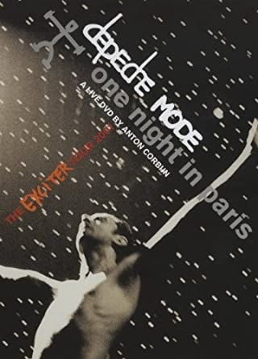

Historia
En 1980, Vince Clarke (ex No Romance In China), Martin Gore (ex French Look y Norman & The Worms) y Andy Fletcher formaron en Basildon (Inglaterra) el trío Composition Of Sound. Clarke era por aquel entonces el vocalista, cosa que no le agradaba demasiado por lo que ficharon a Dave Gahan, un estudiante de diseño de Essex.
Su primera actuación como Depeche Mode (del francés: Moda Rápida) la ofrecieron ese mismo año en el St. Nicholas School de Basildon. Meses más tarde estaban grabando maquetas. Ficharon por la discográfica independiente Mute Records y en abril de 1981 editaron Dreaming of me, su primer sencillo
Según el documental Historia del rock de la BBC "son los padres del rock electrónico", está considerado uno de los mejores exponentes del género, siendo importantes precursores del uso del sintetizador como instrumento y del sampler como recurso musical,así como de la realización de videos musicales.
Ha vendido más de 120 millones de álbumes,3 sumando el total de ventas de sus discos en todo el mundo,incluyendo sencillos, convirtiéndose en el más exitoso grupo de música electrónica en la historia. También fue elegido entre los 50 mejores grupos de música de todos los tiempos y uno de los 10 más influyentes de la música contemporánea
Todas las canciones escritas y compuestas por Martin Gore
- Depeche Mode - World in My Eyes (Devotional 1993)
- Depeche Mode - Sweetest Perfection(Video Oficial)
- Depeche Mode - Personal Jesus (Live in Barcelona 2009)
- Depeche Mode - Halo (Devotional Tour 1993)
- Depeche Mode - Waiting For The Night (Tour Of The Universe 2009 Barcelona)
- Depeche Mode - Enjoy The Silence (Live in Berlin)
- Depeche Mode - Policy Of Truth [Live PCM Stereo Version] (Video Oficial)
- Depeche Mode - Blue Dress (violator montage)
- Depeche Mode - Clean (Live)

Videoclips
Strangelove” (1986)-La imagen granulada, los lentes oscuros y los rincones de Paris marcan este video nuevamente a cargo de Corbijn. La pieza audiovisual, nuevamente en blanco y negro, logra cautivar la intensidad y lírica del éxito de fines de los ’80.
 Ver Strangelove
Ver Strangelove
“A Question of Lust” (1986)-En este extravagante video la figura es Martin Gore, quien aparece en solitario cantando las líneas del single de Black Celebration (1986). Richardson fue capaz de captar la emoción del tecladista y mezclarla con imágenes en vivo del conjunto. Fue la última colaboración del director con Depeche Mode.
 Ver Question of Lust”
Ver Question of Lust”
“Enjoy the Silence” (1990)-El video más extraño que se recuerde de la videografía de Depeche Mode tiene a Gahan vestido como un Rey caminando por diferentes lugares de Europa. El clip hace referencias a pasajes de El Principito mientras se entremezclan tomas del cuarteto en blanco y negro.
 Ver Enjoy the silence
Ver Enjoy the silence
Precious” (2005)-Un muy artístico videoclip en el que el trío se desenvuelve entre un barco generado por computadora hasta una especie de bosque alienígena, todo bajo la dirección de Uwe Flade.
 Ver Precious
Ver Precious
“Heaven” (2013)-La película The Tree of Life de Terence Malick es la gran inspiración de este video que presenta al trío británico en una catedral ubicada en Nueva Orleans. La letra va de la mano de las imágenes dirigidas por Timothy Saccenti.
 Ver Heaven
Ver Heaven
"Where's the revolution" (2017)-Correspondiente al ultimo disco que lleva el mismo nombre, canción escogida como primer sencillo y que en su texto hace referencia al discurso pronunciado por Lenin el 7 de noviembre de 1919.
 Ver Where's the revolution
Ver Where's the revolution
Recitales

Fue su primer álbum en directo publicado en formato digital DVD. Como su nombre indica, Una noche en París, contiene material del concierto realizado la noche del 10 de octubre de 2001 en la ciudad de París, Francia, correspondiente a la gira Exciter Tour con motivo del álbum Exciter de ese mismo año, aunque en realidad con material también de una noche antes, del 9 de octubre, probablemente no mencionado en el empaque para no contradecir el título; y un segundo disco con material adicional.
Ver Recital Depeche Mode(one night in Paris)
Documental "Spirits in the forest"
La película Spirits in the Forest hace referencia a su más reciente álbum Spirit, y del que se desencadena la gira Global Espirit. En este documental, no solo se enfocará en mostrar la vida de Depeche Mode durante su gira, también se entrelazará la vida de seis fans que se encuentran en diferentes partes del mundo. Entre escenas de sus ciudades natales, y cosas ordinarias, su punto de encuentro será Berlín. Depeche Mode visitó Waldbühne, que significa 'Forest Stage' o 'Teatro del Bosque'. El propósito es mostrar cómo la banda ha influido en la vida de estas personas y el efecto que ha causado en cada una de ellas hasta el momento del concierto.
Ver trailer Spirits in the forest

:format(jpeg):mode_rgb():quality(40)/discogs-images/R-2248925-1531692964-3674.jpeg.jpg){kind=link}